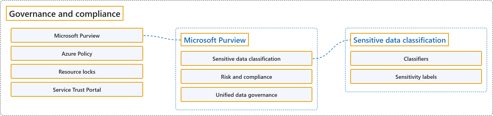

20.2 Governance and Compliance
Classification

Glossary
| Term | Definition | 中文翻译 | Source |
|---|---|---|---|
| Microsoft Purview Microsoft Purview |
"Microsoft Purview is a family of data governance, risk, and compliance solutions that helps you get a single, unified view into your data." | Microsoft Purview 是一系列数据治理、风险和合规解决方案，帮助你获得数据的单一、统一视图。 | Microsoft, n.d.-b, para. 1 |
| Sensitive data classification 敏感数据分类 |
(context) "With Microsoft Purview, you can stay up-to-date on your data landscape thanks to: Automated data discovery; Sensitive data classification; End-to-end data lineage" | （语境）借助 Microsoft Purview，你能随时掌握自己的数据全貌，靠的是：自动数据发现；敏感数据分类；端到端数据世系。 | Microsoft, n.d.-b, para. 2 and list |
| Classifiers 分类器 |
"Microsoft Purview classifiers help administrators identify sensitive content so they can protect and manage it." | Microsoft Purview 分类器帮助管理员识别敏感内容，以便保护和管理这些内容。 | Microsoft, 2026a, para. 1 |
| Sensitivity labels 敏感度标签 |
"When you assign a sensitivity label to content, it's like a stamp that you apply. The label is: Customizable. You can create categories that fit your organization's specific business needs for different levels of sensitive content. For example, you might use categories like Personal, Public, General, Confidential, and Highly Confidential." | 给内容分配敏感度标签，就像盖一个章。这个标签：可自定义。你可以按组织的业务需要，为不同敏感级别的内容创建类别，例如 Personal、Public、General、Confidential 和 Highly Confidential。 | Microsoft, 2026b, "What a sensitivity label is" section, para. 1 and list item 1 |
| Risk and compliance 风险和合规 |
"Microsoft Purview, by managing and monitoring your data, helps your team: Protect sensitive data across clouds, apps, and devices. Identify data risks and manage regulatory compliance requirements. Get started with regulatory compliance." | Microsoft Purview 通过管理和监控你的数据，帮助你的团队：跨云、应用和设备保护敏感数据；识别数据风险并管理法规合规要求；开始着手法规合规。 | Microsoft, n.d.-b, "Microsoft Purview risk and compliance solutions" section, para. 1 and list |
| Unified data governance 统一数据治理 |
"Microsoft Purview has robust, unified data governance solutions that help manage your on-premises, multicloud, and software as a service data." | Microsoft Purview 拥有强大、统一的数据治理解决方案，帮助管理你的本地、多云和软件即服务数据。 | Microsoft, n.d.-b, "Unified data governance" section, para. 1 |
| Azure Policy Azure 策略 |
"Azure Policy is a service in Azure that enables you to create, assign, and manage policies that control or audit your resources." | Azure Policy 是 Azure 中的一项服务，让你能够创建、分配和管理策略，用这些策略来控制或审核你的资源。 | Microsoft, n.d.-a, para. 2 |
| Resource locks 资源锁 |
"A resource lock prevents resources from being accidentally deleted or changed." | 资源锁可防止资源被意外删除或更改。 | Microsoft, n.d.-c, para. 1 |
| Service Trust Portal 服务信任门户 |
"The Microsoft Service Trust Portal is a portal that provides access to various content, tools, and other resources about Microsoft security, privacy, and compliance practices." | Microsoft Service Trust Portal 是一个门户，提供各种内容、工具和其他资源，涉及 Microsoft 的安全、隐私和合规实践。 | Microsoft, n.d.-d, para. 1 |
References
- Microsoft. (2026a, September 30). Microsoft Purview classifiers overview. Microsoft Learn. https://learn.microsoft.com/en-us/purview/data-classification-overview
- Microsoft. (2026b, October 29). Learn about sensitivity labels. Microsoft Learn. https://learn.microsoft.com/en-us/purview/sensitivity-labels
- Microsoft. (n.d.-a). Describe the purpose of Azure Policy [Training unit]. Microsoft Learn. Retrieved October 25, 2026, from https://learn.microsoft.com/en-us/training/modules/describe-features-tools-azure-for-governance-compliance/3-describe-purpose-azure-policy
- Microsoft. (n.d.-b). Describe the purpose of Microsoft Purview [Training unit]. Microsoft Learn. Retrieved October 25, 2026, from https://learn.microsoft.com/en-us/training/modules/describe-features-tools-azure-for-governance-compliance/2-describe-purpose-microsoft-purview
- Microsoft. (n.d.-c). Describe the purpose of resource locks [Training unit]. Microsoft Learn. Retrieved October 25, 2026, from https://learn.microsoft.com/en-us/training/modules/describe-features-tools-azure-for-governance-compliance/4-describe-purpose-resource-locks
- Microsoft. (n.d.-d). Describe the purpose of the Service Trust portal [Training unit]. Microsoft Learn. Retrieved October 25, 2026, from https://learn.microsoft.com/en-us/training/modules/describe-features-tools-azure-for-governance-compliance/6-describe-purpose-service-trust-portal